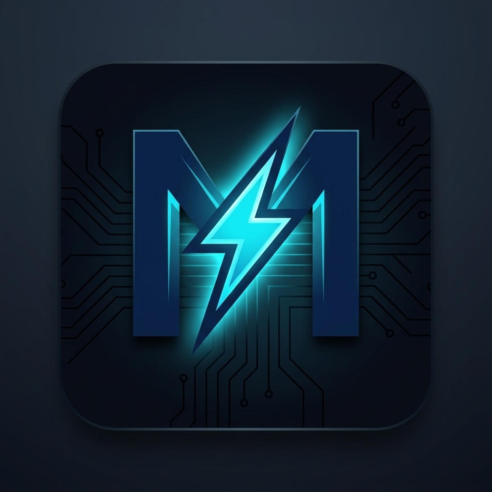

MockNerveMockNerve
Offline Exam & MCQ Prep by Xoviq Labs
MockNerve is a mobile app (Android and iOS) that helps students prepare for competitive and school exams. Your study data lives on your own device, so you can practise anywhere, even without internet.
Features
- Mock exams and MCQ practice with timers, scoring and review of past attempts.
- Question papers from photos or files – import pages with your camera, gallery or document picker.
- Notes and study files with voice dictation.
- Spaced repetition and study streaks to keep revision on track.
- Optional AI help using your own Google Gemini API key.
- Optional Google Drive backup – sign in with Google to back up and restore your data to a private, hidden app folder in your own Drive.
- Shareable exam packs that you can send to friends and import.
Sign in with Google
Signing in is optional and used only for backup. MockNerve requests your email address and basic profile (to show which account is connected) and access to its own hidden App Data folder in Google Drive. It cannot see any other file in your Drive. MockNerve also collects anonymous usage analytics, which you can turn off in Settings. See our Privacy Policy for full details.
Legal
Privacy Policy · Terms of Service
Contact
Questions or support: info@xoviqlabs.com